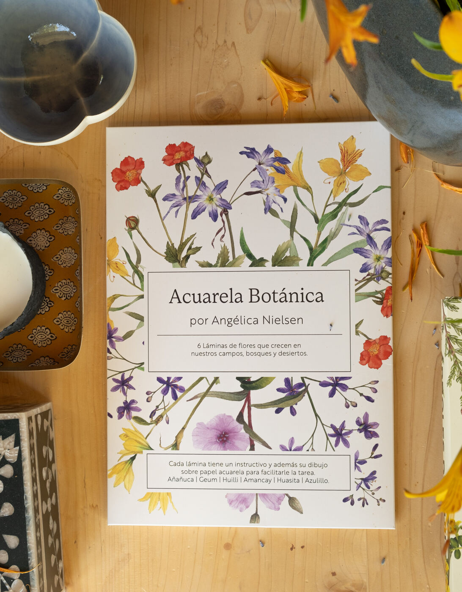
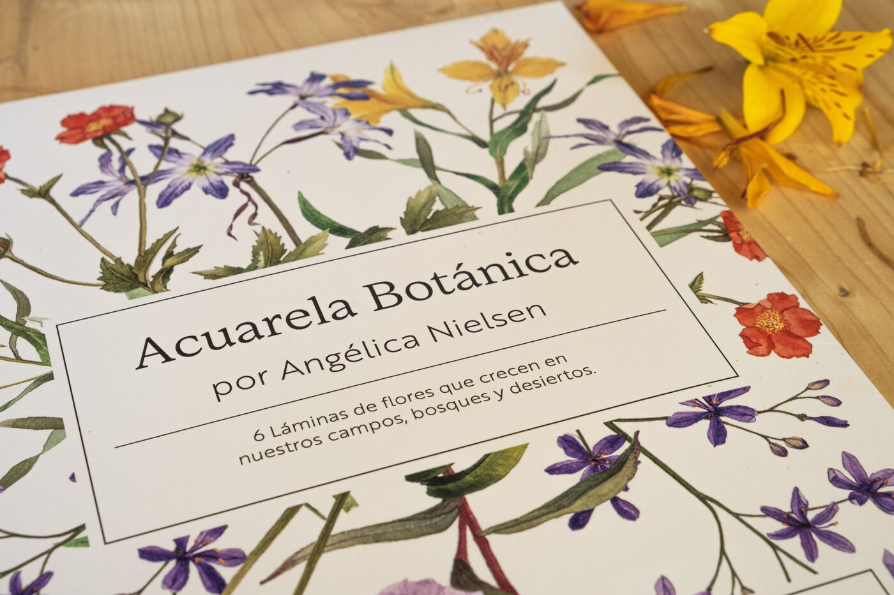
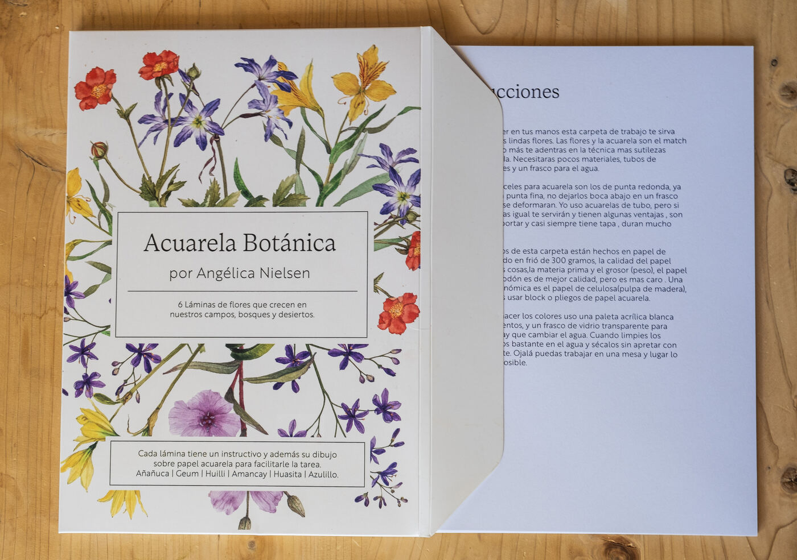
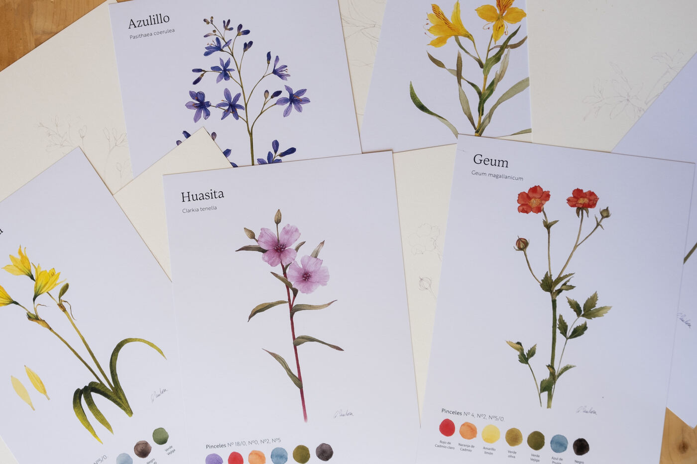
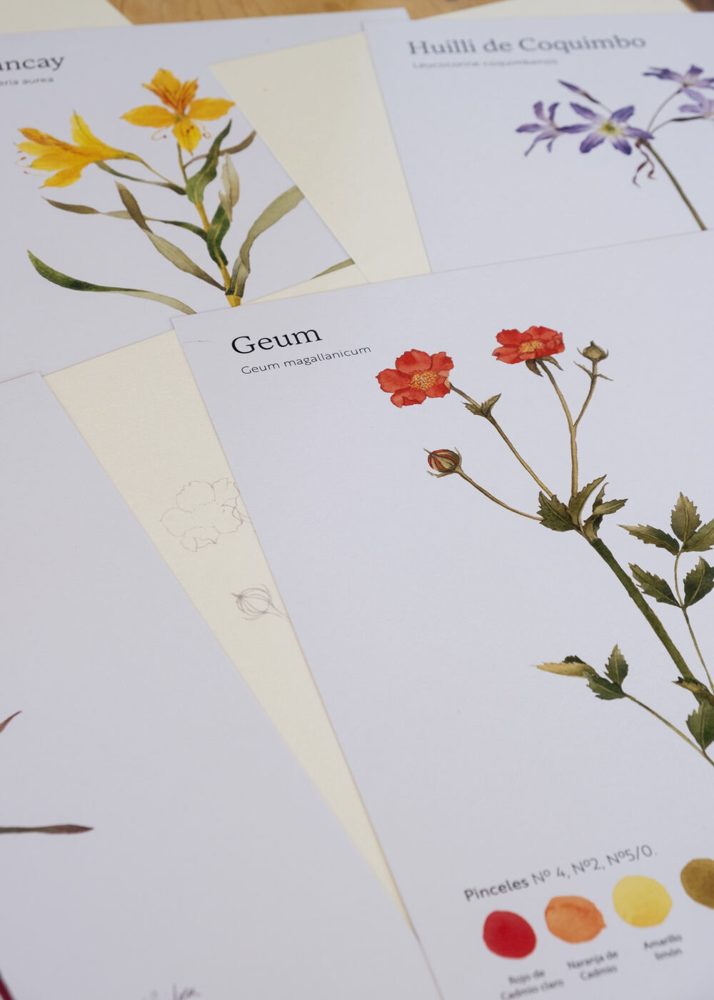
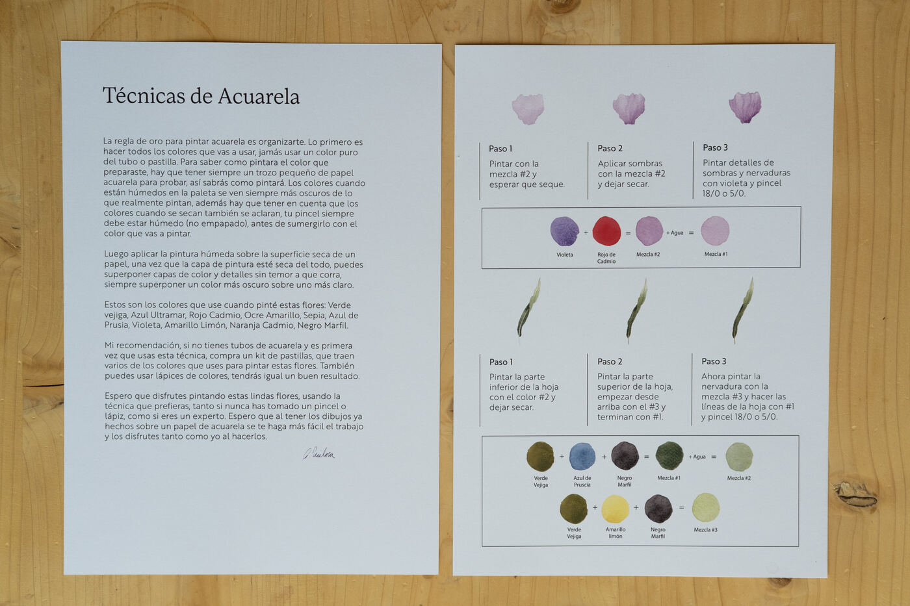

En conjunto con Angélica Nielsen, profesora y acuarelista, se diseñaron láminas para pintar con acuarela paso a paso. El set incluye el sobre contenedor, instructivo, ejemplos de referencia y las láminas impresas con el contorno de flores nativas chilenas.